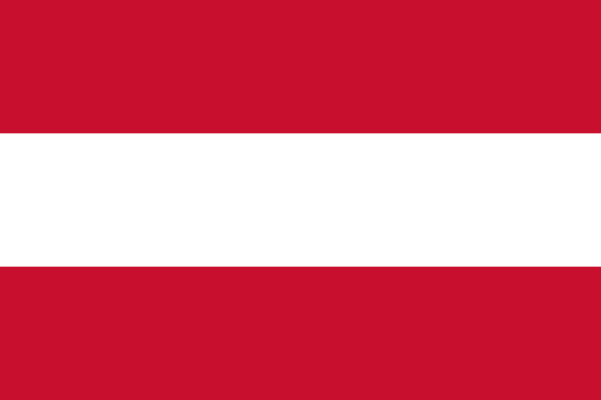

| Explore the list of the current challengers of the 2022 Formula 1 season! |
|---|
| Team | From | Car | Drivers |
|---|---|---|---|
 AMG Mercedes F1 Petronas |
 Germany |
W13 2022 F1 Car |
George Russell (GBR) / Lewis Hamilton (GBR) |
For the 2022 Formula 1 Season, Mercedes brought its latest challenger, the W13 Formula 1 car. This car, like the Williams's FW 44, brings a radical "No-Sidepod" design to increase the airflow of the vehicle and make it slip throigh the air. Paired with the future UK star george Russell and legendary 7 time World Champion Lewis Hamilton, Mercedes hopes to keep up the streak of their Constructor Championship going and reclaim the Drivers Championship title again, after losing it in 2021 to Max Verstappen.
| Team | From | Car | Drivers |
|---|---|---|---|
 Oracle Red Bull Racing |
 Austria |
RB18B F1 Car |
Max Verstappen (NED)/ Sergio Perez(MEX) |
Red Bull's challenger for 2022 is the RB18B Formula 1 car. The driver pairing is the Driver's Championship defendant Max Verstappen and Sergio Perez. Red Bull, this time, hopes to also conquer the Constructors Championship, as well as the Driver's Championship, after Mercedes managed to snatch the Constructor's title in 2021.
| Team | From | Car | Drivers |
|---|---|---|---|
 Scuderia Ferrari |
 Italy |
F1-75 F1 Car |
Charles Leclerc (MON)/ Carlos Sainz Jr. (ESP) |
After 2 years of struggle and resource management, Mattia Binotto brings to the table Ferrari's new F1-75 Formula 1 car. This car has come under the radar of a lot of people for being the true title contender, as now Ferarri seems to be able to fight at the top with quite a margin. The driver pairing for Ferrari is Charles Leclerc and Carlos Sainz Jr. Fun Fact, Charles and Carlos is the same name, but in different langauges!
| Team | From | Car | Drivers |
|---|---|---|---|
 Mclaren F1 Team |
United Kindom |
 MCL36 F1 Car |
Lando Norris (GBR)/ Daniel Ricciardo(AUS) |
Mclaren's new challenger is the 2022 MCL36 Formula 1 Car. The driver pairing is Lando Norris and Daniel Ricciardo. Mclaren, this year, hopes to achieve wins and podiums since CEO Zack Brown has already made clear that Mclaren is stll a couple of years away from being a Title Contender.
| Team | From | Car | Drivers |
|---|---|---|---|
 BWT Alpine F1 |
France |
A22 F1 Car |
Esteban Ocon (FRA)/ Fernando Alonso (ESP) |
Alpine brings their A22 Formula 1 car for the 2022 season. The driver pair consists of legendary 2 time World Champion and 2 time Le Mans and WEC Champion Fernando Alonso and Esteban Ocon. Alpine aims to break away from their streak of coming 5th in the Constructor Championship since 2019, and achieve wins and podiums.
| Team | From | Car | Drivers |
|---|---|---|---|
 Scuderia Alpha Tauri |
Italy |
AT03 F1 car |
 Pierre Gasly (FRA)/ Yuki Tsunoda (JPN) |
After Alpha Tauri equalled their best finish position in 2021 (6th), they brought their new AT03 in hopes to beat it this time. The driver pairing is Pierre Gasly and last year rookie Yuki Tsunoda.
| Team | From | Car | Drivers |
|---|---|---|---|
 Aston Martin F1 |
United Kindom |
AMR22 F1 Car |
Sebastian Vettel (GER)/ Lance Stroll (CAD) |
After a promising but ultimately underwelming 2021 campaign, Aston Martin hopes to replicate their success of the 2020 season (then known as Racing Point) with their new AMR22 F1 car. The driver pairing is Lance Stroll and 4 time World Champion Sebastian vettel
| Team | From | Car | Drivers |
|---|---|---|---|
 Williams F1 |
United Kindom |
FW 44 F1 Car |
Nicholas Latifi (CAD)/ Alex Albon (THA) |
Williams this year brings the 2022 FW 44 Formula 1 Car. It is the only other "No Side-Pods" design car, the other one being the Mercedes W13. Williams hopes to become the best of the midfield this year, to gain as many points as they car. The driver pairing is Red Bull's loaned Alex Albon and Nicholas Latifi
| Team | From | Car | Drivers |
|---|---|---|---|
| Alfa Romeo Racing |
 Switzerland |
C42 F1 Car |
Guanyu Zhou (CHN)/ Valtteri Bottas(FIN) |
Alfa Romeo renews their partnership with Sauber and together they bring out their C42 Formula 1 car for the current season. The driver pair changes completely, with now having on board the ex Mercedes F1 driver Valtteri Bottas and this year's rookie Guanyu Zhou. Alfa Romeo hopes to achieve podiums this season, as they've put focus a lot of their resources for this year's car.
| Team | From | Car | Drivers |
|---|---|---|---|
 Haas f1 |
 USA |
VF22 F1 Car |
Mick Shumacher (GER)/ Kevin Magnussen (DEN) |
After a dry previous season with the two rookies Nikita Mazepin and Mick Shumacher, Haas brings for the 2022 season their VF22 F1 car. Haas decided to use all of its 2021 budget into the VF22, as upgrading a car with two rookies would have been risky. Unfortunately for Nikita, as the war in Ukraine broke out, he was told to leave and now his seat is taken by Kevin Magnussen, who made a surprise return after deciding himself to quit from Formula 1 in 2020. The second driver is still Mick Shumacher, son of absolute legend Michael Shumacher.